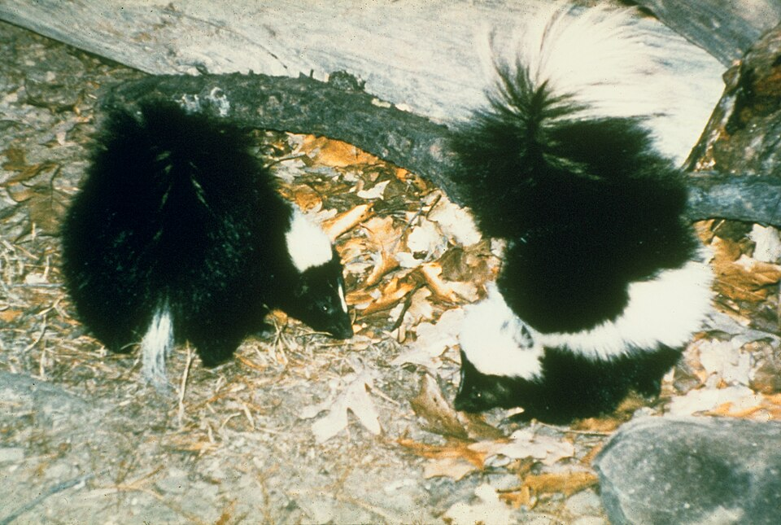
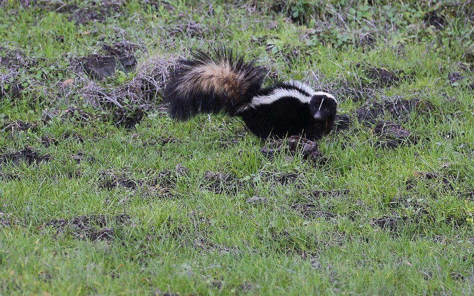

Striped Skunk
Mephitis mephitis


- Kind
- mammal
- Legal status
- No closed season for hunting; trapping is open for about two months, from late October through the end of December (Vermont Fish & Wildlife). (checked 2026-11-10)
Names
Striped skunk, Mephitis mephitis.
Easily recognized by the white stripe running from its head to its tail, and by the musk it sprays when threatened.
Range and habitat
Fields, forests, grasslands, brushy open areas, and urban and suburban areas, wherever food, shelter and water are within about two miles. The Fish & Wildlife page calls it abundant in Vermont, with numbers that vary from year to year with food, weather and disease.
How to identify
- Total length 52 to 77 cm; usually 1.8 to 4.5 kg (Wikipedia).
- Stout and short-legged with a small conical head and a long, heavily furred tail; black with a white stripe from the head that divides at the shoulders and runs to the rump and tail.
- The forefeet have five long, curved digging claws; it raises its tail when threatened, and is not a good climber or runner.
Signs on the land
- Digging for insects and burrowing animals leaves small pits.
- Dens in hollow logs, abandoned buildings, woodpiles, bank dens or abandoned burrows.
Through the year
Active from sunset to sunrise. Not a true hibernator: it dens during cold spells, sometimes sharing with other skunks. Breeding is from February through late March; about 63 days later two to ten young (average six or seven) are born, from late April to early June.
Role on the land
An omnivore: insects, beetles, crickets, grasshoppers, small mammals, birds, eggs, vegetation, garbage and unattended pet food. Its musk can carry up to a mile. A rabid skunk should be avoided; signs include daytime activity, aggression, or not spraying, and the page says to contact an animal control officer.
What helps it thrive
It needs food, shelter and water within about two miles; garbage and pet food draw skunks to towns.
Sources
- Vermont Fish & Wildlife, Striped Skunk: https://vtfishandwildlife.com/learn-more/vermont-critters/mammals/striped-skunk
- Wikipedia, Striped skunk: https://en.wikipedia.org/wiki/Striped_skunk
Vermont Woodland Owner's Reference, built 2026-11-10. Rules and dates here are summaries, not legal advice; dates shift with elevation and year. Photo and recording credits · The text is by Loop Works, CC BY 4.0 (pictures and recordings keep their own licenses)